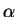
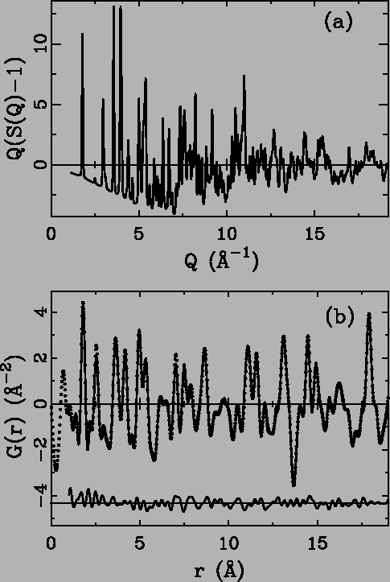
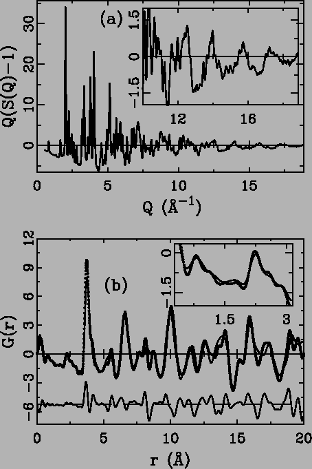
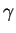

All the experimental data from samples Ni, 
-AlF3, Bi4V2O11 and Bi4V1.7Ti0.3O10.85 show excellent counting statistics over the entire Q range,
reflecting the significant advantage obtained by extracting 1D data
sets by integration of a 2D area detector. Image plate exposure time,
ranging from one second (Ni) to 10 seconds (-AlF3), was chosen
carefully for each sample to maximize the dynamic range of the IP
without saturating the phosphor on the Bragg peaks. Data collection
was repeated a number of times until acceptable statistical errors
were observed at high-Q in the reduced structure functions, as shown
in Figures 2.4(a),
2.5(a), and 2.6(a). All the
PDFs, G(r), show either superior or acceptable qualities.
The first example, shown in Fig. 2.4, is from standard Ni
powder with Qmax of 28.5 Å-1. The Ni PDF, G(r), in
Fig. 2.4 (b) appears to have minimal systematic errors
which appear as the small ripples before the first PDF peak at
r = 2.4 Å. These result from imperfect data corrections and their
small amplitude is a good indication of the high quality of the data.
A structural model (space group
Fm m) was readily
refined, and gave excellent agreement with the data as shown in
Fig. 2.4(b). The lattice parameter (3.5346(2) Å) and
an isotropic thermal displacement parameter (
U = 0.005184(6) Å2) were refined. The lattice parameters reproduce
the expected values given in previously published
data [18]. In spite of the simplicity of the Ni
crystal structure, the exceptional quality of both the experimental Ni
PDF and refinement indicates that the necessary data corrections of
image plate data with high Q range (28.5 Å-1 in this case) can
be carried out properly and with an acceptable level of accuracy.
m) was readily
refined, and gave excellent agreement with the data as shown in
Fig. 2.4(b). The lattice parameter (3.5346(2) Å) and
an isotropic thermal displacement parameter (
U = 0.005184(6) Å2) were refined. The lattice parameters reproduce
the expected values given in previously published
data [18]. In spite of the simplicity of the Ni
crystal structure, the exceptional quality of both the experimental Ni
PDF and refinement indicates that the necessary data corrections of
image plate data with high Q range (28.5 Å-1 in this case) can
be carried out properly and with an acceptable level of accuracy.
Figure 2.5:
(a) Experimental reduced structure function
F(Q) = Q*(S(Q) - 1) of -AlF3, (b) G(r) and modeled PDF of -AlF3,
notations as in Fig. 2.4.
|

|
The weakly scattering -AlF3 compound, in addition to a slightly more
complex structure than Ni, presents a greater challenge to proper data
correction due to the majority contribution of Compton scattering in
the high Q region. The reduced structure function and resulting
PDF are shown in Fig. 2.5. The data were
successfully refined using a previously reported model from the
literature (space group
Rc) [69]. The
fit is shown in Fig. 2.5(b). The overall quality
of the fit is good with a weighted profile agreement
factor [11] of 3 percent. The refined lattice parameters
are
a = b = 4.9420(3) Å,
c = 12.4365(2) Å. The fractional
coordinate of the F atom is
x = 0.4267(4). These numbers are
consistent with the Rietveld refinement of the same data, which
produced refined lattice parameters of
a = b = 4.9383(4) Å and
c = 12.4271(1) Å, and a fractional coordinate,
x = 0.4287(4), for
the F atom. Both refinements are consistent with the published data
of 4.9381(5) Å, 12.4240(3) Å, and 0.4309(4), respectively
[65]. The successful application of PDF analysis of
-AlF3 data indicates this technique is capable of handling weakly
scattering materials and still gives reliable information.
Figure 2.6:
(a) Reduced structure function F(Q)
of Bi4V2O11, (b) Experimentally obtained G(r)'s of Bi4V2O11 (solid
dots) and Bi4V1.7Ti0.3O10.85 (solid line). The differences between them are
plotted below with an offset, noting the high reproducibility in
the low r region (also shown in the inset).
|

|
In addition to the highly crystalline and rather simple nickel and
-AlF3 structures, the more complex and disordered layered Aurivillius
type oxide anion conductors Bi4V2O11 and Bi4V1.7Ti0.3O10.85 were examined. The
structure is derived from the ordered Bi4Mo2O12 structure,
which contains alternating Bi2O22+ layers spaced by corner
sharing perovskite MoO6 layers [66,70]. The
vanadium analogues contain significant disorder in the vanadium layers
due to oxygen vacancies. Vanadium can exist in 4, 5, and 6 coordinate
environments, inducing significant static disorder in these layers,
which is further complicated by dynamic disorder resulting from the
high anionic conductivity of these materials. Titanium substitution
on the vanadium sites leads to the stabilization of the high
temperature 
-phase. The experimentally obtained reduced
structure function, F(Q), of Bi4V2O11 is shown in
Fig. 2.6(a). A combined PDF and Rietveld analysis
was carried out on the same data set and detailed results will be
reported elsewhere. To examine the reproducibility of the systematic
errors in the IP data analysis, the measured data for the compounds
Bi4V2O11 and Bi4V1.7Ti0.3O10.85 were compared (Fig. 2.6(b)).
Clearly, the ripples in the low r regions are rather small and
highly reproducible, implying the high reliability of the PDF data
especially for comparative studies. For example, very small
differences exist around the first V-O bond length of 1.80 Å, as
evident in the inset of Fig. 2.6(b). The
significant differences beyond the first peak reveal the somewhat
drastic structural changes on longer length scales. This also shows
that RA-PDF is capable of capturing structural changes where they
exist, reproducing local structures if unchanged.
Medium-high real-space resolution PDF data analysis from crystalline
materials was performed by using image plate data and shows promising
results. Comparable or even better statistics than from conventional
X-ray measurements can be achieved with significantly shorter counting
times. The new combination of a real space probe and fast counting
time opens up a broad field for future applications to a wide variety
of materials of both scientific and technological interest. For
example, PDF methods could be used to study structural changes under
in situ conditions [71] and the time development
of chemical reactions and biological systems over short time scales of
seconds may be studied.
Xiangyun Qiu
2005-02-18